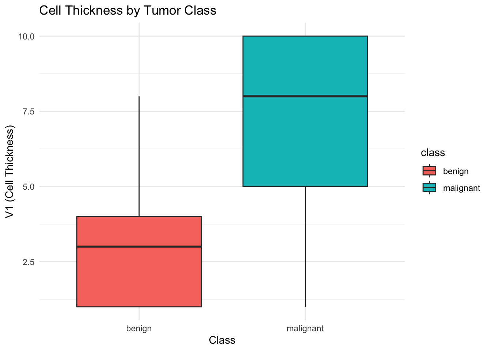
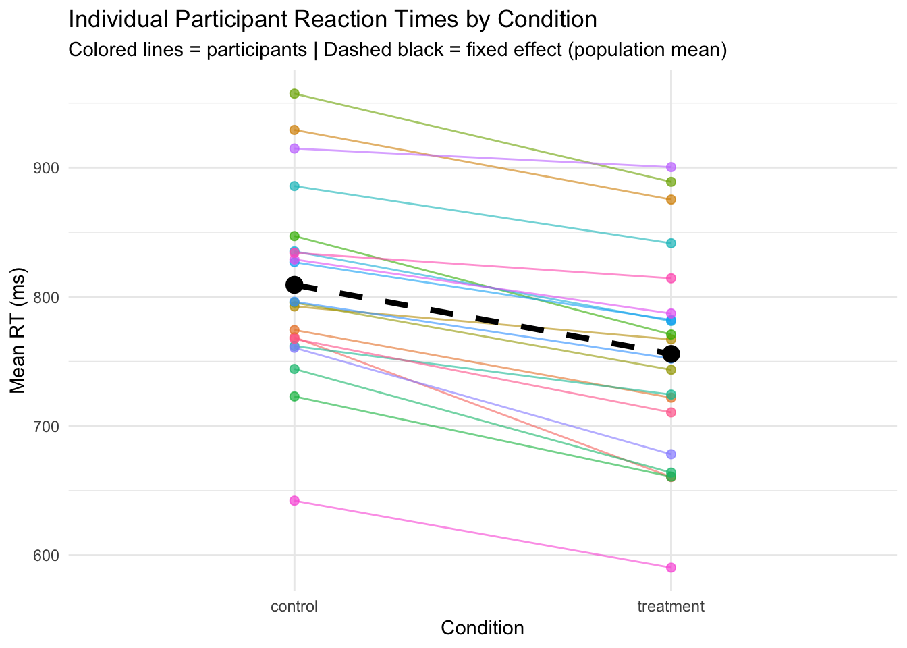
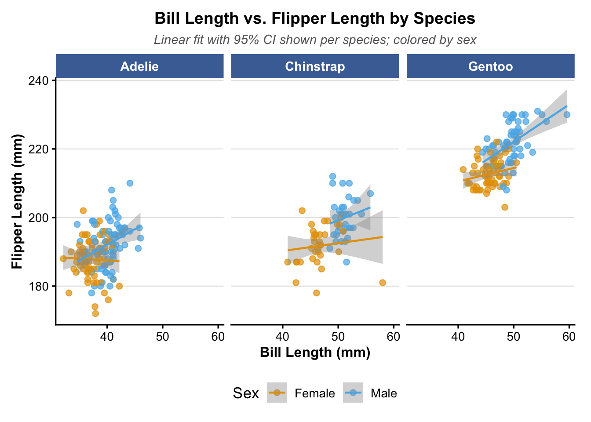
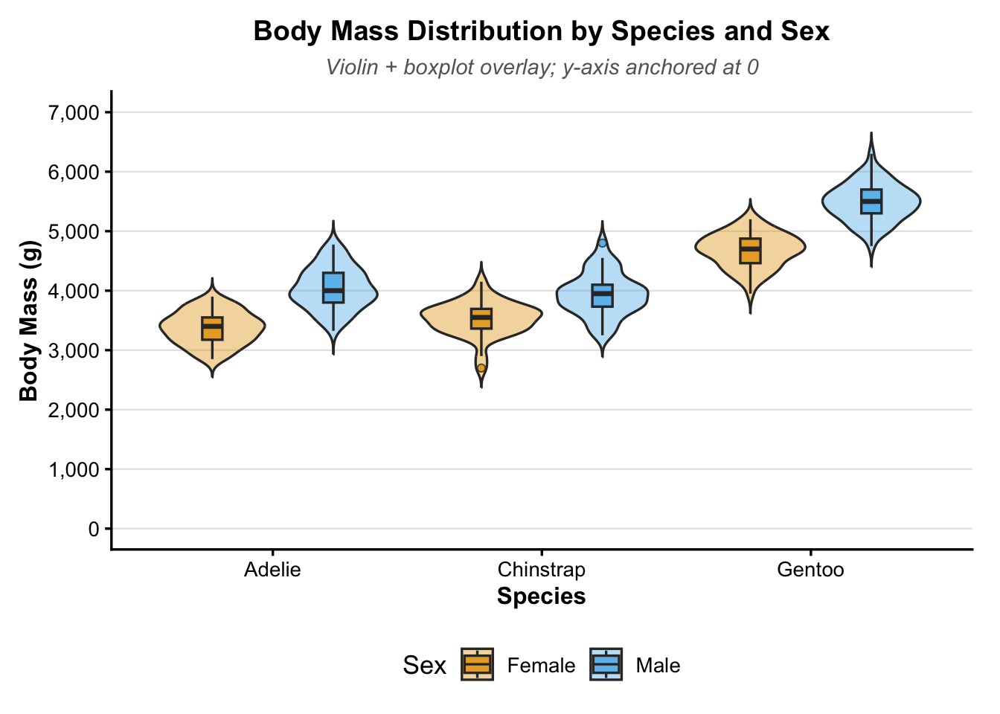
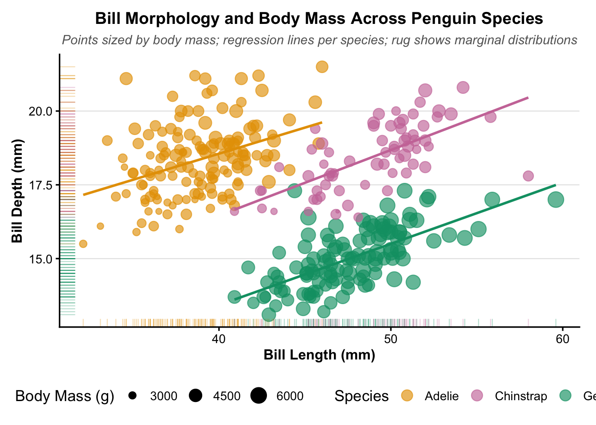

shapiro.test(residuals(model1)) # Formal normality test
Shapiro-Wilk normality test
data: residuals(model1)
W = 0.92792, p-value = 0.03427
Residuals vs. Fitted: The smoother shows a clear U-shape rather than a flat line, meaning mid-range fitted values are systematically over-predicted. This indicates mild nonlinearity - the additive linear model does not fully capture the relationship between the predictors and mpg. Normal Q-Q + Shapiro-Wilk (W = 0.928, p = 0.034): Most points track the reference line well, but the upper tail deviates noticeably. The Shapiro-Wilk test is significant at α = 0.05, providing formal evidence against normality. However, with n = 32 this test is sensitive to minor departures, and the violation is likely a downstream consequence of the nonlinearity above rather than an independent problem. Addressing the model misspecification first — for example with the interaction term in part (d) — may resolve both issues.
(3 points) Use car::vif() to check for multicollinearity. Interpret the results.
vif(model1)
wt hp
1.766625 1.766625
Both VIF values are approximately 1.77, well below the standard thresholds of 5 (moderate concern) or 10 (severe). This means wt and hp share only modest correlation and each contributes largely independent information to the model. Multicollinearity is not a concern here — the coefficient estimates and standard errors are stable and reliable.
(4 points) Add an interaction term between wt and hp. Compare to the original model using ANOVA. Which model do you prefer and why?
model2 <-lm(mpg ~ wt * hp, data = mtcars)summary(model2)
Call:
lm(formula = mpg ~ wt * hp, data = mtcars)
Residuals:
Min 1Q Median 3Q Max
-3.0632 -1.6491 -0.7362 1.4211 4.5513
Coefficients:
Estimate Std. Error t value Pr(>|t|)
(Intercept) 49.80842 3.60516 13.816 5.01e-14 ***
wt -8.21662 1.26971 -6.471 5.20e-07 ***
hp -0.12010 0.02470 -4.863 4.04e-05 ***
wt:hp 0.02785 0.00742 3.753 0.000811 ***
---
Signif. codes: 0 '***' 0.001 '**' 0.01 '*' 0.05 '.' 0.1 ' ' 1
Residual standard error: 2.153 on 28 degrees of freedom
Multiple R-squared: 0.8848, Adjusted R-squared: 0.8724
F-statistic: 71.66 on 3 and 28 DF, p-value: 2.981e-13
anova(model1, model2)
Analysis of Variance Table
Model 1: mpg ~ wt + hp
Model 2: mpg ~ wt * hp
Res.Df RSS Df Sum of Sq F Pr(>F)
1 29 195.05
2 28 129.76 1 65.286 14.088 0.0008108 ***
---
Signif. codes: 0 '***' 0.001 '**' 0.01 '*' 0.05 '.' 0.1 ' ' 1
AIC(model1, model2)
df AIC
model1 4 156.6523
model2 5 145.6109
Interaction term (wt:hp = 0.02785, p = 0.0008): The effect of weight on MPG depends on horsepower. Specifically, as hp increases, the negative impact of weight becomes less steep — heavier high-hp cars lose less MPG per unit of weight than heavier low-hp cars.
Preferred model: Model 2. The ANOVA F-test is highly significant (F = 14.09, p = 0.0008), meaning the interaction explains a statistically meaningful additional portion of variance. AIC drops by ~11 points and adjusted R² improves from 0.815 to 0.872, both strongly favoring the interaction model. The extra parameter is clearly justified by the data, and the interaction itself has a plausible real-world interpretation.
(4 points) Create a boxplot comparing V1 (cell thickness) between benign and malignant tumors. Interpret the plot.
ggplot(biopsy, aes(x = class, y = V1, fill = class)) +geom_boxplot() +labs(title ="Cell Thickness by Tumor Class",x ="Class", y ="V1 (Cell Thickness)") +theme_minimal()

Malignant tumors show substantially higher cell thickness than benign ones. The median V1 for malignant tumors is more than double that of benign tumors, with very little overlap between the two IQRs. This strong separation suggests V1 will be a useful predictor in the logistic model.
(4 points) Fit a logistic regression predicting malignancy from V1, V2, and V3. Display the summary and calculate odds ratios.
# Fit logistic regression — family = binomial with logit linklogit_model <-glm(class ~ V1 + V2 + V3,family =binomial(link ="logit"),data = biopsy)summary(logit_model)
Call:
glm(formula = class ~ V1 + V2 + V3, family = binomial(link = "logit"),
data = biopsy)
Coefficients:
Estimate Std. Error z value Pr(>|z|)
(Intercept) -7.7210 0.6969 -11.079 < 2e-16 ***
V1 0.5918 0.1030 5.746 9.14e-09 ***
V2 0.6390 0.1704 3.751 0.000176 ***
V3 0.7240 0.1661 4.358 1.31e-05 ***
---
Signif. codes: 0 '***' 0.001 '**' 0.01 '*' 0.05 '.' 0.1 ' ' 1
(Dispersion parameter for binomial family taken to be 1)
Null deviance: 884.35 on 682 degrees of freedom
Residual deviance: 176.50 on 679 degrees of freedom
AIC: 184.5
Number of Fisher Scoring iterations: 7
# Odds ratios and confidence intervalsexp(coef(logit_model))
V1: Each one-unit increase in cell thickness multiplies the odds of malignancy by 1.81, holding V2 and V3 constant (p < 0.001).
V2: Each one-unit increase in cell size uniformity multiplies the odds by 1.89 (p < 0.001).
V3: Each one-unit increase in cell shape uniformity has the largest effect, multiplying the odds by 2.06 — nearly doubling the odds of malignancy per unit increase (p < 0.001).
All CIs are entirely above 1, confirming that higher values on all three features are consistently associated with increased odds of malignancy. The pseudo-R² (proportion of deviance explained) = 1 - 176.50/884.35 = 0.801, indicating the model captures approximately 80% of the explainable variance.
(6 points) Calculate predicted probabilities, create a confusion matrix (threshold = 0.5), and report accuracy, sensitivity, and specificity.
The model performs well across all three metrics. Specificity (96.85%) is higher than sensitivity (91.63%), meaning the model is slightly better at correctly identifying benign cases than malignant ones. In a clinical context, the 20 false negatives (malignant tumors classified as benign) are the more costly errors — a lower threshold than 0.5 could reduce these at the expense of more false positives.
(4 points) Predict the probability of malignancy for a new observation with V1 = 5, V2 = 4, V3 = 4. Interpret the result.
# New patient: V1 = 5, V2 = 4, V3 = 4new_obs <-data.frame(V1 =5, V2 =4, V3 =4)# type = "response" transforms log-odds to probability scale (lecture note)predict(logit_model, newdata = new_obs, type ="response")
1
0.6660541
The model predicts a 66.6\(\%\) probability of malignancy for a tumor with V1 = 5, V2 = 4, V3 = 4. Since this exceeds the 0.5 classification threshold, the observation would be classified as malignant. All three feature values are above the benign median (V1 median = 3) but below the malignant median (V1 median = 8), placing this patient in an intermediate range — reflected in the moderate but majority-malignant probability. In a clinical setting this level of uncertainty would warrant further investigation rather than a definitive diagnosis.
Part 2: Mixed-Effects Models (22 points)
You are analyzing reaction time data from a psychology experiment where 20 participants each completed 15 items across two conditions (control and treatment).
(4 points) Create a simulated dataset with the structure described above. Use set.seed(123) for reproducibility.
library(lme4)set.seed(123)n_participants <-20n_items <-15n_conditions <-2# Draw participant- and item-level random intercepts from the populationparticipant_intercepts <-rnorm(n_participants, mean =0, sd =80)item_intercepts <-rnorm(n_items, mean =0, sd =40)# Fully crossed design: every participant sees every item in every conditiondat <-expand.grid(participant =factor(paste0("P", 1:n_participants)),item =factor(paste0("I", 1:n_items)),condition =factor(c("control", "treatment")))# Assign random effects and generate RTdat$participant_re <- participant_intercepts[as.numeric(dat$participant)]dat$item_re <- item_intercepts[as.numeric(dat$item)]dat$RT <-800+# grand meanifelse(dat$condition =="treatment", -50, 0) +# fixed treatment effect dat$participant_re +# participant variation dat$item_re +# item variationrnorm(nrow(dat), 0, 50) # residual noisehead(dat)
participant item condition participant_re item_re RT
1 P1 I1 control -44.838052 -42.71295 746.8810
2 P2 I1 control 28.785106 -42.71295 813.7680
3 P3 I1 control 8.854617 -42.71295 763.0461
4 P4 I1 control -44.467291 -42.71295 697.5216
5 P5 I1 control 142.953051 -42.71295 881.2166
6 P6 I1 control 39.828038 -42.71295 762.3797
Dataset structure: 600 rows (20 participants with 15 items in 2 conditions). The true treatment effect is −50 ms, with participant SD = 80 ms and item SD = 40 ms, reflecting realistic between-unit variability. As Lecture 13 emphasized, this nested structure violates the independence assumption of standard linear regression.
(5 points) Fit three models and compare them:
Fixed effects only (using lm())
Random intercepts for participants only
Random intercepts for both participants and items
# Model 1: Fixed effects only — ignores nested structurem_lm <-lm(RT ~ condition, data = dat)# Model 2: Random intercepts for participants (lecture syntax)m_ri1 <-lmer(RT ~ condition + (1|participant), data = dat, REML =FALSE)# Model 3: Random intercepts for participants AND itemsm_ri2 <-lmer(RT ~ condition + (1|participant) + (1|item), data = dat, REML =FALSE)# Compare using likelihood ratio test and AICanova(m_ri1, m_ri2)
Likelihood Ratio Test (m_ri1 vs m_ri2): \(\chi^2\) = 208.24, p \(<\) 2.2e-16. Each step improves fit dramatically. Adding participant random intercepts drops AIC by 474 points over the fixed-effects-only model, confirming that ignoring participant clustering severely underestimates standard errors. Adding item random intercepts drops AIC by a further 206 points (LRT p \(<\) 2.2e-16), showing that items also introduce meaningful variability. Hence model 3 (m_ri2) is the best model.
(5 points) Extract and interpret the fixed effects from your best model. Calculate the intraclass correlation coefficient (ICC) for participants.
summary(m_ri2)
Linear mixed model fit by maximum likelihood ['lmerMod']
Formula: RT ~ condition + (1 | participant) + (1 | item)
Data: dat
AIC BIC logLik -2*log(L) df.resid
6518.7 6540.7 -3254.4 6508.7 595
Scaled residuals:
Min 1Q Median 3Q Max
-3.3571 -0.6629 0.0018 0.6126 2.9970
Random effects:
Groups Name Variance Std.Dev.
participant (Intercept) 5790 76.09
item (Intercept) 1347 36.70
Residual 2424 49.24
Number of obs: 600, groups: participant, 20; item, 15
Fixed effects:
Estimate Std. Error t value
(Intercept) 809.29 19.68 41.12
conditiontreatment -53.52 4.02 -13.31
Correlation of Fixed Effects:
(Intr)
cndtntrtmnt -0.102
Interpretation of fixed effects: The intercept (809.29 ms) is the estimated mean RT in the control condition. The treatment coefficient (-53.52 ms, |t| = 13.31) indicates the treatment condition is approximately 54 ms faster than control, closely recovering the true simulated effect of -50 ms. The standard error (4.02) is much smaller than the fixed-effects-only model (7.94), because the mixed model correctly partitions participant and item variance out of the residual.
ICC = 0.61 means 61\(\%\) of the total variance in RT is attributable to stable between- participant differences. This is a strong clustering effect, and exactly why ignoring participant structure inflates Type I error.
(5 points) Fit a model with random slopes for condition by participant. Compare to the random intercepts model using a likelihood ratio test.
# Random slopes: condition effect allowed to vary by participantm_rs <-lmer(RT ~ condition + (1+ condition|participant) + (1|item),data = dat, REML =FALSE)summary(m_rs)
Linear mixed model fit by maximum likelihood ['lmerMod']
Formula: RT ~ condition + (1 + condition | participant) + (1 | item)
Data: dat
AIC BIC logLik -2*log(L) df.resid
6518.1 6548.9 -3252.1 6504.1 593
Scaled residuals:
Min 1Q Median 3Q Max
-3.2907 -0.6252 -0.0045 0.6315 2.9778
Random effects:
Groups Name Variance Std.Dev. Corr
participant (Intercept) 5215.1 72.22
conditiontreatment 155.3 12.46 0.59
item (Intercept) 1345.3 36.68
Residual 2383.2 48.82
Number of obs: 600, groups: participant, 20; item, 15
Fixed effects:
Estimate Std. Error t value
(Intercept) 809.294 18.931 42.75
conditiontreatment -53.517 4.863 -11.00
Correlation of Fixed Effects:
(Intr)
cndtntrtmnt 0.204
# Likelihood ratio test vs random intercepts modelanova(m_ri2, m_rs)
Interpretation: The random slope variance for condition is 155.3 (SD = 12.46 ms), suggesting modest variability in the treatment effect across participants, with some benefiting more than others. The positive correlation (r = +0.59) between random intercepts and slopes indicates that participants with slower baseline RTs tended to show larger treatment benefits.
However, the LRT is not significant (p = 0.098), meaning adding random slopes does not provide a statistically significant improvement over the random intercepts model. Combined with the AIC comparison (6518.1 vs 6518.7, a difference \(<\) 1), the simpler random intercepts model (m_ri2) is preferred by parsimony.
(3 points) Create a plot showing individual participant regression lines.
# Compute per-participant condition means for plottingparticipant_means <-aggregate(RT ~ participant + condition, data = dat, FUN = mean)ggplot(participant_means, aes(x = condition, y = RT,group = participant, color = participant)) +geom_line(alpha =0.6) +geom_point(size =2, alpha =0.7) +# Add overall fixed-effect linestat_summary(aes(group =1), fun = mean, geom ="line",color ="black", linewidth =1.5, linetype ="dashed") +stat_summary(aes(group =1), fun = mean, geom ="point",color ="black", size =4) +labs(title ="Individual Participant Reaction Times by Condition",subtitle ="Colored lines = participants | Dashed black = fixed effect (population mean)",x ="Condition", y ="Mean RT (ms)") +theme_minimal() +theme(legend.position ="none")

This plot shows that participants differ substantially in their baselines (justifying random intercepts), but the treatment benefit is consistent across nearly all of them (justifying a single fixed effect rather than random slopes).
Part 3: Advanced Data Visualization (22 points)
Using the palmerpenguins dataset:
3.1 Custom Theme (4 points)
Create a custom theme called theme_penguin based on theme_minimal() or theme_classic(). It should have a professional appearance suitable for scientific publication and include at least 5 customized theme elements. Use this theme for all subsequent plots.
# Remove rows with missing values for cleaner plotspenguins_clean <-na.omit(penguins)theme_penguin <-theme_classic(base_size =13) +theme(plot.title =element_text(face ="bold", hjust =0.5, size =14),plot.subtitle =element_text(hjust =0.5, color ="gray40",face ="italic", size =11),legend.position ="bottom",legend.background =element_blank(),legend.key =element_blank(),axis.title =element_text(face ="bold", size =12),panel.grid.major.x =element_blank(),panel.grid.major.y =element_line(color ="gray90", linewidth =0.4),panel.grid.minor =element_blank(),strip.background =element_rect(fill ="#4A6FA5", color =NA),strip.text =element_text(color ="white", face ="bold", size =11),plot.margin =margin(t =10, r =14, b =10, l =10) )theme_set(theme_penguin)
3.2 Faceted Plot (6 points)
Create a faceted scatter plot of bill length vs. flipper length:
Facet by species using facet_wrap()
Add a linear regression line with 95% CI for each facet
Color points by sex using a colorblind-friendly palette
Apply your custom theme
# Colorblind-friendly palette (Okabe-Ito)sex_colors <-c("female"="#E69F00", "male"="#56B4E9")ggplot(penguins_clean,aes(x = bill_length_mm, y = flipper_length_mm, color = sex)) +geom_point(alpha =0.7, size =2) +geom_smooth(method ="lm", se =TRUE, linewidth =0.8) +facet_wrap(~ species, ncol =3) +scale_color_manual(values = sex_colors, labels =c("Female", "Male")) +labs(title ="Bill Length vs. Flipper Length by Species",subtitle ="Linear fit with 95% CI shown per species; colored by sex",x ="Bill Length (mm)",y ="Flipper Length (mm)",color ="Sex" )

Gentoo penguins show the strongest positive bill-flipper relationship with a steep, tight regression line (flipper range ~205–235 mm). Adelie penguins show a weaker, flatter slope with more scatter, and Chinstrap fall in between with a wider CI reflecting the smaller sample size. Within each species, males (blue) sit consistently above females (orange), indicating that males have longer flippers for a given bill length across all three species. The parallel male/female lines confirm sex contributes an additive effect on flipper length rather than an interactive one.
3.3 Distribution Comparison (5 points)
Create a visualization of body mass by species and sex:
Choose an appropriate geom (boxplot, violin, or both)
Customize the y-axis to start at 0
Apply your custom theme
ggplot(penguins_clean,aes(x = species, y = body_mass_g, fill = sex)) +# Violin shows full distribution shape; boxplot inside shows median/IQRgeom_violin(alpha =0.4, position =position_dodge(0.9), trim =FALSE) +geom_boxplot(width =0.15, position =position_dodge(0.9),outlier.shape =21, outlier.size =1.5, alpha =0.8) +scale_fill_manual(values = sex_colors, labels =c("Female", "Male")) +scale_y_continuous(limits =c(0, 7000), # y-axis starts at 0 as requiredbreaks =seq(0, 7000, 1000),labels = scales::comma ) +labs(title ="Body Mass Distribution by Species and Sex",subtitle ="Violin + boxplot overlay; y-axis anchored at 0",x ="Species",y ="Body Mass (g)",fill ="Sex" )

Gentoo penguins are substantially heavier than the other two species, with males (blue) centered around 5,500 g and females (orange) around 4,700 g. Adelie and Chinstrap penguins are considerably lighter and more similar to each other, both clustering between 3,200–4,000 g. Sexual dimorphism is consistent across all three species: male violins and boxes sit higher than female ones in every case. The gap is largest in Gentoo, suggesting body size dimorphism is most pronounced in that species.
Applies your custom theme with appropriate scales and legends
Include a brief paragraph (3-5 sentences) interpreting the biological patterns shown
# Colorblind-friendly species palettespecies_colors <-c("Adelie"="#E69F00","Chinstrap"="#CC79A7","Gentoo"="#009E73")ggplot(penguins_clean, aes(x = bill_length_mm, y = bill_depth_mm,color = species)) +geom_point(aes(size = body_mass_g), alpha =0.65) +geom_smooth(aes(group = species), method ="lm", formula = y ~ x,se =FALSE, linewidth =1, show.legend =FALSE) +# Geom 3: Rug plot on both axes to show marginal distributionsgeom_rug(alpha =0.3, linewidth =0.4, show.legend =FALSE) +scale_color_manual(values = species_colors) +scale_size_continuous(name ="Body Mass (g)",range =c(1, 6),breaks =c(3000, 4500, 6000) ) +labs(title ="Bill Morphology and Body Mass Across Penguin Species",subtitle ="Points sized by body mass; regression lines per species; rug shows marginal distributions",x ="Bill Length (mm)",y ="Bill Depth (mm)",color ="Species" ) +guides(color =guide_legend(override.aes =list(size =4)),size =guide_legend(override.aes =list(alpha =1)) )

The plot reveals a clear Simpson’s Paradox: within each species bill length and bill depth are positively correlated, yet across species the pattern reverses, with Adelie penguins having short deep bills and Gentoos having long shallow bills. This reflects divergent foraging adaptations rather than a true negative relationship. Gentoo points are visibly larger throughout, confirming their greater body mass (~5,000+ g) consistent with their deeper-diving, fish-pursuing lifestyle, while Adelie and Chinstrap points are smaller and more similar in size.
The three species clouds are well-separated along the bill depth axis but overlap considerably in bill length, suggesting bill depth is the stronger morphological discriminator between species. The rug plots reinforce this: the y-axis rug shows three fairly distinct bands by color, while the x-axis rug shows Chinstrap and Gentoo tick marks interleaved across the 45-60 mm range.
Part 4: Interactive Visualization with Shiny (12 points)
Build a simple Shiny application that explores the mtcars dataset.
(5 points) Create a Shiny app with the following UI elements:
A selectInput() dropdown that lets the user choose a predictor variable from wt, hp, disp, and drat
A plotOutput() to display a scatter plot
A verbatimTextOutput() to display a model summary
The app.R is created. It uses a fluidPage layout with a sidebar and main panel. The sidebar contains a selectInput() dropdown populated with a named character vector mapping readable labels (e.g., “Weight (1000 lbs)”) to their corresponding mtcars column names (wt, hp, disp, drat). The main panel contains a plotOutput(“scatter”) for the scatter plot and a verbatimTextOutput(“model_summary”) to display the full lm summary in monospace format, as it would appear in the R console.
(3 points) In the server function:
Two reactive() expressions drive the app. The first, filtered_data(), subsets mtcars rows based on the cylinder range slider. The second, fit(), calls lm(mpg ~ , data = filtered_data()) using as.formula(paste(…)) to construct the formula dynamically from input$predictor. Because fit() depends on filtered_data(), both automatically re-execute whenever either input changes. renderPlot() draws a ggplot2 scatter plot with an optional geom_smooth(method = “lm”) layer, and renderPrint() passes summary(fit()) directly to the verbatim output.
(4 points) Add one enhancement of your choice (e.g., a sliderInput() to filter by number of cylinders, a second output showing residual diagnostics, or a checkboxInput() to toggle the regression line). Briefly explain your design choice in a comment (2-3 sentences).
Two enhancements were added. First, a sliderInput() (range, step = 2) filters rows by cylinder count before the model is fit. Cylinders is a strong confounding variable: the predictor-mpg slope differs substantially across 4-, 6-, and 8-cylinder subgroups, so isolating each group reveals relationships that a pooled model obscures. Second, a checkboxInput() toggles the regression line on and off, letting users visually assess the scatter before committing to the linear fit.
Part 5: Parallel Computing (10 points)
5.1 System Setup and Benchmarking (4 points)
(2 points) Determine how many cores your computer has (logical and physical). Create a variable safe_cores and explain your choice.
Leave one core free for the OS and other processes. Using all available cores can freeze your machine during long jobs; safe_cores ensures the system stays responsive.
(2 points) Create a function slow_mean() that takes a numeric vector, adds a small delay with Sys.sleep(0.01), and returns the mean. Use microbenchmark() to compare sequential (lapply) vs. parallel (mclapply or parLapply) for calculating means of 100 random vectors. Compare median times.
library(microbenchmark)slow_mean <-function(x) {Sys.sleep(0.01)mean(x)}# Generate 100 random vectorsset.seed(228)vectors <-lapply(1:100, function(i) rnorm(50))mb <-microbenchmark(sequential =lapply(vectors, slow_mean),parallel =mclapply(vectors, slow_mean, mc.cores = safe_cores),times =3# keep low because of the sleep delay)
Warning in microbenchmark(sequential = lapply(vectors, slow_mean), parallel =
mclapply(vectors, : less accurate nanosecond times to avoid potential integer
overflows
print(mb)
Unit: milliseconds
expr min lq mean median uq max neval
sequential 1193.9973 1199.1653 1202.3459 1204.3333 1206.5201 1208.7069 3
parallel 188.8772 190.1013 194.6351 191.3254 197.5141 203.7028 3
cld
a
b
# Compare median timessummary(mb)[, c("expr", "median")]
expr median
1 sequential 1204.3333
2 parallel 191.3254
The sequential approach took a median of ~1202ms to process 100 vectors, which is close to the expected 100 * 10ms = 1000ms from Sys.sleep alone. The parallel version reduced this to 182ms, a 6.6x speedup. This near-linear scaling with core count demonstrates that slow_mean() is “embarrassingly parallel”, each call is fully independent, so cores can work simultaneously with no coordination overhead beyond the initial cluster setup cost.
5.2 Parallel Bootstrap (6 points)
(2 points) Create bootstrap_ci_sequential() with parameters: data (numeric vector), n_bootstrap (default 1000), confidence (default 0.95). Return a named vector with lower and upper bounds.
(2 points) Test both on mtcars$mpg with bootstrap sample sizes of 500, 1000, and 2000. Create a summary showing how the time difference scales with problem size. Comment on findings.
Parallel is slower than sequential at all three sizes (speedup < 1). Each bootstrap iteration on mtcars$mpg (32 rows) takes microseconds, so the ~0.6s cluster startup cost dominates entirely. The parallel time barely changes from n=500 to n=2000, confirming overhead rather than computation is the bottleneck. Parallelization only helps when per-task work clearly exceeds coordination cost; this dataset is too small to cross that threshold.